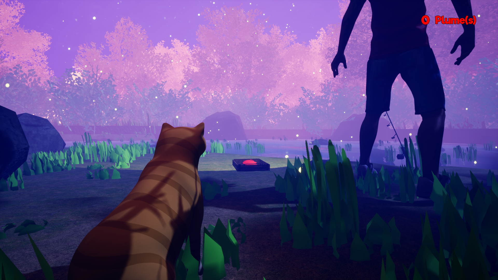
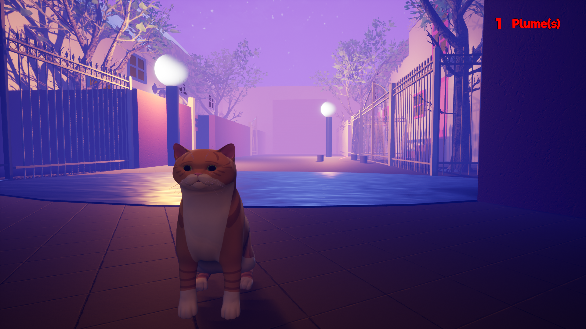

Présentation du Projet
Hungry Cat est un jeu d'aventure narratif à la troisième personne développé au cours de la 3ème année d'études en équipe de 5 personnes pendant 4 mois. Le jeu invite le joueur à incarner un chat explorant un univers poétique et mystérieux au bord d'un lac paisible.
Ce que j'ai fait sur le projet
▸
Programmation du Tutoriel : Conception et implémentation du système d'apprentissage contextuel, des déclencheurs interactifs (triggers) et de l'affichage des astuces de guidage sans briser l'immersion narrative.
▸
Programmation de l'IA du Pêcheur : Développement des arbres de comportement (Behavior Trees) et des routines de patrouille, réactions aux bruits et actions du chat, et gestion des champs de vision du personnage non-joueur (PNJ).
▸
Game Design : Définition des règles de déplacement, de l'échelle d'interaction féline (saut, discrétion, grimpette) et de la progression de la quête principale.
▸
Level Design (Tutoriel & Zone du Lac) : Conception du découpage spatial, composition des vues clés, placement des éléments d'ambiance et optimisation des chemins de circulation du joueur.
▸
Intégration VFX / SFX : Implémentation des effets de particules d'ambiance (eau, vent, feuilles), du spatial audio 3D, et synchronisation des sons de pas et d'environnement.
Galerie de Captures d'Écran
Cliquez sur une image pour l'agrandir en plein écran :


